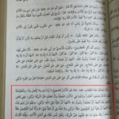

Shia Kalima as a Declaration of Faith
In this article, we will be discussing the Shia Kalima. As all Muslims know, the known and popular Kalima among Muslims is “I bear witness that there is no god except Allah, And Muhammad is the Messenger of God.” (Narrated by Salama bin Al-Akwa’ in Saheeh Al-Bukhari #2484 and Abu Huraira in Saheeh Muslim #27) The Shia Kalima includes the following words “`Ali yun Waliyullah” or “I bear witness that `Ali is the friend of Allah.”
The difference between the Sunni Kalima and the Shia Kalima is that the former can be found in the Qur’an, we find {There is no god except Allah} in Qur’an [Surat Muhammad, verse 19] and we find {Muhammad is the Messenger of God} in Qur’an [Surat-ul-Fath, verse 29].
However, the words “`Ali is God’s friend” are nowhere in the Qur’an. That’s their first flaw with the Shia Kalima. To fix this problem, Shia will take a general verse talking about the obedient believers who establish prayer and give charity [Qur’an 5:55] then claim that the word “believers” is “`Ali”. This is a weak opinion that relies on fabricated narrations none of which are authentic.
Not only is the Shia Kalima not in the Qur’an, but the narrations they use to twist the interpretation of the above verse are all weak and unreliable. This is their second failure and defeat.
Shia Kalima in the Call to Prayer
Now that we are done discussing the testimony of faith, and after we showed that the Sunni testimony of faith (Kalima) or as it is referred to “al-Shahadatayn” is a part of the Qur’an whereas the third testimony added by the Shia Kalima is nowhere in God’s book, we turn our attention to the Islamic call of prayer.
The Shia insist on adding the Shia Kalima to the call to prayer (Adhan) and at the beginning of every prayer (Iqamah). The Shia attack all those who disagree with them and stubbornly alter the common and mass transmitted texts of the Adhan and Iqamah by inserting “`Ali-yun Waliyullah”.
Here is something the Shia of our days may not know, is that their ancestors, as well as the eleven Imams (excluding the fictional one), have never added the words “`Ali-yun Waliyullah” to the Adhan or Iqamah.
First, let’s see what the Imams of the Shia said in their authentic narrations as is found in the main books:
عَنْ إِسْمَاعِيلَ الْجُعْفِيِّ قَالَ سَمِعْتُ أَبَا جَعْفَرٍ ع يَقُولُ الْأَذَانُ وَ الْإِقَامَةُ خَمْسَةٌ وَ ثَلَاثُونَ حَرْفاً فَعَدَّ ذَلِكَ بِيَدِهِ وَاحِداً وَاحِداً الْأَذَانَ ثَمَانِيَةَ عَشَرَ حَرْفاً وَ الْإِقَامَةَ سَبْعَةَ عَشَرَ حَرْفاً
`Ali bin Ibrahim with his chain to aba Ja`far (as) reports: “The Adhan and the Iqamah have 35 parts, he counted by his hand one by one, the Adhan had 18 parts and the Iqamah 17 parts.”
Source: al-Kafi 3/302. Majlisi said “Reliable” in al-Mir’at 15/82.
Their leader al-Mufid confirmed this in al-Muqni`ah 1/100 as he also counted 35 parts as opposed to today’s Shia who added to make it 39.
To simplify, if you were to add the third Shia testimony regarding `Ali to the Adhan, it becomes 20 parts instead of 18. This shows al-Baqir never approved of this addition or spoke of it.
It doesn’t stop here, we will notice that according to the Shia standards of Hadith, not ONE authentic Hadith in their books contains the addition of “`Ali-yun Waliyullah” as part of the Adhan. Not one authentic narration says that adding these words to Adhan/Iqamah is obligatory or recommended. This, of course, makes it a “Bid`ah” or innovation, as is confirmed by their top scholars.
Their leader al-Tusi says
و أمّا ما روي في شواذّ الأخبار من قول: أشهد انّ عليا وليّ اللّه و آل محمّد خير البريّة فممّا لا يعمل عليه في الأذان و الإقامة. فمن عمل بها كان مخطئا
[As for the odd reports saying “I bear witness that `Ali is the friend of God” and “I bear witness that the family of Muhammad are the best of creation.” These are not to be included in neither the Adhan nor the Iqamah. Whoever includes them is comitting an error.]
Source: al-Nihayah pg.69
Their leader al-Shahid al-Thani says:
و أمّا إضافة «أنّ عليّاً وليّ اللّه»، و «آل محمّد خير البريّة» و نحو ذلك فبدعة، و أخبارها موضوعة
[As for adding “`Ali-yun Waliullah” or “Aal-Muhammad Khayr-ul-Bariyyah” and similar things (to the Adhan), then this is an innovation and it’s based on fabricated reports.]
Source: Sharh Irshad-ul-Adhhan 2/646
The fact that they are committing a baseless innovation as stated above is their third failure and defeat.
The final nail in the coffin is this quote from one of their biggest and earliest scholars cursing those who make this addition and identifying them as deviant extremists!
Their leader al-Saduq says after mentioning the Adhan:
[This is the correct text for the call to prayer, you must not add to it or subtract from it. However, the Mufawwidah (extremist sect of Shia) may God curse them, they fabricated narrations and added to the Adhan these words “Muhammad & his family are the best of creation” they announce it twice and in some narrations after bearing witness that Muhammad is the Messenger of God, they add “I bear witness that `Ali is the friend (Wali) of Allah” also repeating it twice. Others narrated it twice as such “I bear witness that `Ali is the chief of believers truly”. No doubt that `Ali is a friend of God and truly is the chief of believers and that Muhammad’s family is the best of creation. However, these are not to be included in the Adhan and I mention it only so that those accused of extremism and have insulated themselves in our ranks be known.]
{kind=link}
Source: Al-Faqih 1/290
This phenomenon is very common in the Shia world, this is how their sect evolved and kept evolving to this day. What was considered at one point “Extremism” for them simply turns into a habit with the passing of time. This is how the early political Shia morphed into a religious sect of extremists.
Their contemporary leader `Abdullah al-Mamaqani says while defending one of their narrators who was accused of “extremism” by the ancient Shia:
إنا قد بينا غير مرة أن رمي القدماء الرجلَ بالغلو لا يُعتمد عليه ولا يُركن إليه، لوضوح كون القول بأدنى مراتب فضائلهم – يعني الأئمة – غلواً عند القدماء، وكون ما نعده اليوم من ضروريات مذهب التشيع غلواً عند هؤلاء، وكفاك في ذلك عد الصدوق نفي السهو عنهم غلواً مع أنه اليوم من ضروريات المذهب، وكذلك إثبات قدرتهم على العلم بما يأتي – أي علم الغيب – بتوسط جبرائيل والنبي غلواً عندهم وهو من ضروريات المذهب اليوم
[We have clarified more than once, that we do not rely on the ancients when they accuse a man of extremism. Because believing in their smallest virtues (i.e Imam’s virtues) was considered extremism for our early predecessors. Whatever we consider today as being from the necessities of our sect, they (i.e the ancient Shia) used to consider as extremism. A sufficient example would be al-Saduq, he considered those who deny the forgetfulness of the Imams as extremists even though it became from the necessities today. Similarly, establishing for them the ability to know the unseen via Jibril or the Prophet was counted as an extremist belief in their eyes although it is from the necessities of our school today.]
Source: Tanqih-ul-Maqal 3/240
Their last failure shows how the inventions of the extremists and deviants make their way into their core beliefs and shape their sect with time until they end up becoming the norm. This is due to their misguidance and ignorance as well as the leadership of their unqualified scholars under the banner of a non-existing Imam.
Salaam.
You stated, “First, let’s see what the Imams of the Shia said in their authentic narrations as is found in the main books:
عَلِيُّ بْنُ إِبْرَاهِيمَ عَنْ مُحَمَّدِ بْنِ عِيسَى بْنِ عُبَيْدٍ عَنْ يُونُسَ عَنْ أَبَانِ بْنِ عُثْمَانَ عَنْ إِسْمَاعِيلَ الْجُعْفِيِّ قَالَ سَمِعْتُ أَبَا جَعْفَرٍ ع يَقُولُ الْأَذَانُ وَ الْإِقَامَةُ خَمْسَةٌ وَ ثَلَاثُونَ حَرْفاً فَعَدَّ ذَلِكَ بِيَدِهِ وَاحِداً وَاحِداً الْأَذَانَ ثَمَانِيَةَ عَشَرَ حَرْفاً وَ الْإِقَامَةَ سَبْعَةَ عَشَرَ حَرْفاً
`Ali bin Ibrahim with his chain to aba Ja`far (as) reports: “The Adhan and the Iqamah have 35 parts, he counted by his hand one by one, the Adhan had 18 parts and the Iqamah 17 parts.”
Source: al-Kafi 3/302. Majlisi said “Reliable” in al-Mir’at 15/82.
Their leader al-Mufid confirmed this in al-Muqni`ah 1/100 as he also counted 35 parts as opposed to today’s Shia who added to make it 39.
To simplify, if you were to add the third Shia testimony regarding `Ali to the Adhan, it becomes 20 parts instead of 18. This shows al-Baqir never approved of this addition or spoke of it.”
If we remove words “`Ali-yun Waliyullah” from Adhan then it would become 15 parts.
Adhan
—–
Allaahu Akbar (x4)
Ashhadu Alaa ilaaha illa-Lah (x2)
Ash Hadu anna Muhamadar rasuulullah (x2)
Hayya’ alas Salaah (x2)
Hayya’ alal Falaah (x2)
Allaahu Akbar (x2)
Laa ilaaha illa-Lah (x1)
Total parts of Adhan & Iqamah should be 32 parts without addition of Ali un Wali-ULLAH. What is the reason for this?
Salam brother, maybe it’s the Hayya `ala Khayr al-`Amal in their reports. I’ll double check this later. Don’t forget we’re dealing with these folks:
http://www.twelvershia.net/2017/09/05/inconsistency-number-imams/
Wasalaam. Even if I assume it is Hayya `ala Khayr al-`Amal then also the numbers does not add-up. This addition would make Adhan having 17 parts. Still 1 part is missing in Adhan as the hadith states Adhan has 18 parts?
And secondly why would Imam Mohammed Baqir (a.s) add the clause Hayya `ala Khayr al-`Amal in Adhan thus deviating from the Muslim jama’ah. This would cause fitna as adding extra parts in Adhan not followed by Sahabas, Tabi’un & Tabi’ al-Tabi’in is creating sectarianism within Islaam.
al-Baqir would deviate here most likely because al-Baqir never even said this, it’s simply an early fabrication that conflicted with a later fabrication.
As for number of parts in Shia Adhan, here it is according to a Shia website, as you can see, if you remove the two `Alis, you’d get 18.
1 Allahu Akbar
(God is Greatest)
2 Allahu Akbar
(God is Greatest)
3 Allahu Akbar
(God is Greatest)
4 Allahu Akbar
(God is Greatest)
5 Ash’hadu an laa ilaaha ill Allah
(I testify none is deity except God)
6 Ash’hadu an laa ilaaha ill Allah
(I testify none is deity except God)
7 Ash’hadu anna Mohammadur Rasulallah
(I testify Mohammed is Messenger of God)
8 Ash’hadu anna Mohammadur Rasulallah
(I testify Mohammed is Messenger of God)
9 Ash’hadu anna Aliyyun Wali’allah
(I testify Ali is Vicegerent of God)
10 Ash’hadu anna Aliyyun Hujjatullah
(I testify Ali is Ambassador of God)
11 Hayya alas salaah
(Hasten towards prayers)
12 Hayya alas salaah
(Hasten towards prayers)
13 Hayya alal falaah
(Hasten towards success)
14 Hayya alal falaah
(Hasten towards success)
15 Hayya alaa khaeril a’mal
(Hasten towards best activity)
16 Hayya alaa khaeril a’mal
(Hasten towards best activity)
17 Allahu Akbar
(God is Greatest)
18 Allahu Akbar
(God is Greatest)
19 Laa ilaaha ill Allah
(None is deity except God)
20 Laa ilaaha ill Allah
(None is deity except God)
From another website:
ALLAHO AKBAR (4 times)
God is Great
ASH-HADO AL-LAA ILAAHA-ILLALLAAH (2 times)
I bear witness that there is no God but Allah
ASH-HADO ANNA MUHAMMADAR-RASOO-LULLAAH (2 times)
I bear witness that Muhammad (S.W.) is the Messenger of Allah
ASH-HADO ANNA ALIYAN WALI-YULLAH (2 times)
I bear witness that Ali is the representative of Allah
HAYYA A’LASSALAAH (2 times)
Hasten towards prayer
HAYYA A’LALFALAAH (2 times)
Hasten towards prosperity
HAYYA A’LA KHAYRIL AMAL (2 times)
Hasten towards the best of action
ALLAHO AKBAR (2 times)
Allah is Great
LAA ILAAHA IL-LALLAAH (2 times)
There is no God except Allah
– If its fabrication then no need to discuss this ahadith further.
– How can one be so sure that the addition in Adhan is two Shahadahs of Ali (a.s) and not two parts of Hayya alaa khaeril a’mal? These 4 parts (i.e. 2 Shahadahs of Ali & 2 Haya ala khaeril a’mal) aren’t in Ahlul Sunnah’s Adhan.
What you’re observing is a simple case of fabrication contradicting later fabrication. We know that “Haya ala Khaeril etc..” is from the fundamentals of Shia Adhan, it is backed by a ton of Shia narrations as opposed to the “`Aliyun Waliullah”. If we are to eliminate one of the two, we’d eliminate the latter as it is a clear intruder. Secondly, we don’t even believe either versions of the reports to be honest with you, early Shia took “Haya ala Khaeril etc..” as their moto, they differentiated themselves from other sects by incorporating it into their Adhan then attributing it to Ahlul-Bayt. However, later extremist Shia wanted to add even more, they wished to include `Ali in Qur’an, in Sunnah and in Adhan. Their later fabrication would conflict with their earlier ones.
You said that 2 additional phrases in Shia Adhan i.e. “Hayya alaa khaeril a’mal” & “`Aliyun Waliullah” did not coexist in the original Shia Adhan but that the latter phrase was included afterwards by extremist Shias. Is there any evidence for this claim?
Yes, Saduq’s words and the Shia narrations compiled by Imamis in their early books show the phrase “Hayya..” only, no mention of the other addition. According to the early Imami Hadith scholar Saduq, other more extreme Imamis added words on top of that “`Aliyun Waliyu…” although you can never find such words in most Shia narrations. Possibly, if you open the books of more extreme Imamis such as `Alawites and Ghulat you’ll find that junk plastered all over the place (Since they also narrate a lot from the Imams).
I wanted to see the evidence. If possible can you refer me or provide me a link to such an article where a detailed analysis is made on “`Aliyun Waliullah” being later addition by extremist Shias.
The early leader of the Shia al-Saduq admits this as quoted above. The biggest evidence is that Muslims don’t have this in their Adhan, only this sect adds it and they happen to be extreme supporters of `Ali.
Thank you for sharing a useful and rarely known piece of information. This tidbit (plus some others) just shows how much the key beliefs of nowadays Twelver Shi’ism is actually influenced by ghulaat. And we know how hard and harsh the verdict of our earlier Sunni scholars when it comes to the Shi’i ghulaat of the past.
For those considering Twelver Shi’ism, do more research before you make a jump of faith. They are not the real followers of Ahlul Bayt as they always claimed but those who are excessive exeggerators.
May Allah protect us from the fitn of Twelver Shi’ism.
It a pity that the prophet (saw) was unable to Right down his will . all this split and argument wouldn’t have occurred, but nevertheless the prophet (saw) still appointed imam Ali (ra) in ghadirikum, so if you ask me which part would I follow, I gat to tell u… Alquran and Alubayt🙌🙌🙌. Because the prophet legacy is just as the same legacy of Mosses and Aaron. (As) so don’t get it twisted use your common sense. U see all this criticism and split in islam , I was all started because of one man. And it was Abubakar, may God forgive him, so if u guys are confused about Islam here is my advice for u, refer yourself to Qur’an and Alubayt that the prophet gave to us as guidance, is only the Alubayt that can relate the batini (hidden) of Qur’an to us , am a Muslim that love all Muslim especially the saint, and I love dhikir so much, that gave me inner light and made me to understand God and his creation. So My brothers. DO NOT JUDGE A FELLOW HUMAN BEING LIKE U, LEAVE THE JUDGMENT FOR ALMIGHTY ALLAH. in the world of Sufism all we know is zikir
Your comment is irrelevant propaganda, nobody was appointed at Ghadir, you barely understand Arabic. What does esoteric Sufism have to do with adding words to the Adhan?
“refer yourself to Qur’an and Alubayt that the prophet gave to us as guidance”
Well this is exactly what Sunnis have been doing for years, instead of Shias i dare say…
I have a question.
If the Adhan were an INTEGRAL part of Islam, why didn’t Allah mention the words in Quran.
And secondly, Adhan is ‘a call’ to prayer. If you even stand on your house roof and start calling some people for some task, you will be giving out ‘adhan’ for that specific task.
Do we have an authentic reference as to what EXACTLY should be the words in adhan for salaat??
The text of the Adhan is Mutawatir and has been repeated for centuries by everybody. No one can add to it without the people knowing. This is why when the Shia added “`Aliyun Waliyullah” everyone objected.
bro shias often tell me that hazrat ameer muawiya ra and his companions used to abuse hazrat ali ra from the member of his mosque? is it true bro? and even if true then how do i defend hazrat ameer muawiya ra in front of shias?
We all know Mu`awiyah fought against `Ali with the sword, which is a lot worse than bad mouthing him, how do you defend Mu`awiyah in this case? Think about it.
Salam
Could you also please clarify as to why the second khalifa added asalatu khair min al naum to the adhan?
Thank you.
1 – It was narrated that Abu Mahdhoorah (may Allaah be pleased with him) said: I used to give the adhaan for the Messenger of Allaah (peace and blessings of Allaah be upon him) and in the first adhaan of Fajr I used to say: “Hayya ‘ala al-falaah, al-salaatu khayrun min al-nawm, al-salaatu khayrun min al-nawm, Allaahu akbar Allaahu akbar, laa ilaaha ill-Allaah (come to prosperity, prayer is better than sleep, prayer is better than sleep, Allaah is Most Great, Allaah is Most Great, there is no god but Allaah).”
Narrated by Abu Dawood, 500; al-Nasaa’i, 647; classed as saheeh by al-Albaani in Saheeh Abi Dawood.
we know that according to Imam Bukhari and other sunni scholars of hadith , it has no harm while speaking in the adhan. so on this basis if some one utter these words ali un wali Allah in adhan without taking these as part of adhan. what is your opinion?